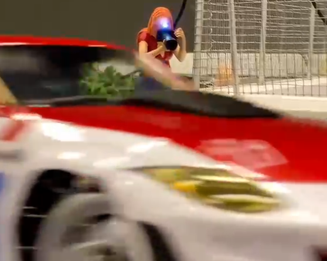
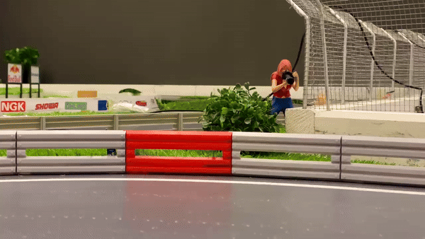
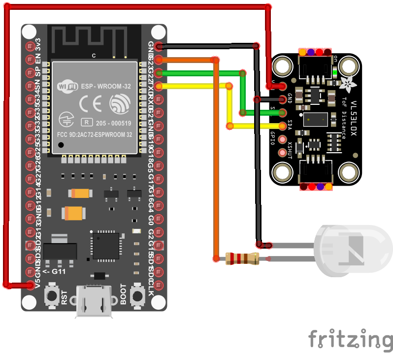
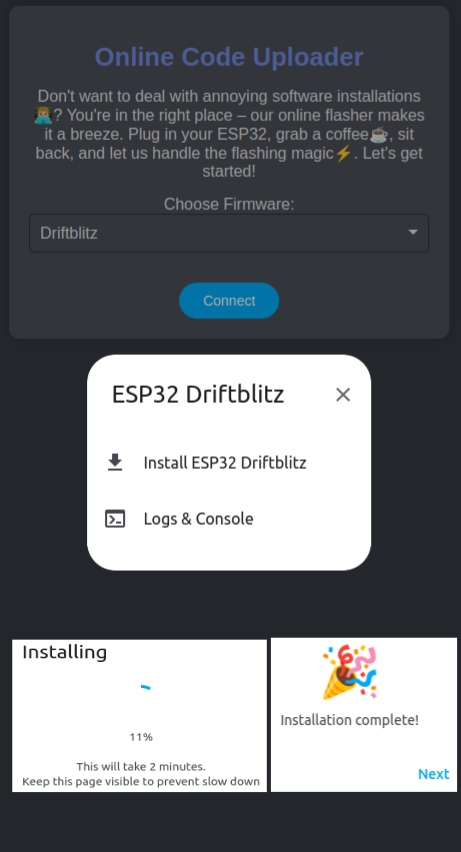
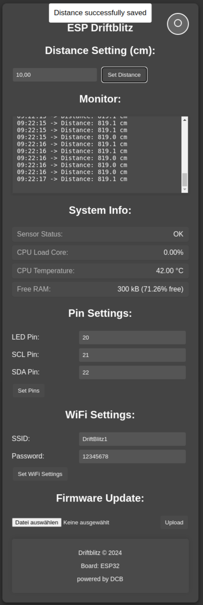

Driftblitz 📸


Willkommen zum Driftblitz-Projekt! 🌍 Dieses ESP32-basierte Projekt wurde entwickelt, um dir eine 🧰 einfache und benutzerfreundliche Lösung zu bieten, ohne dass du dich mit komplizierter Software herumschlagen musst. Mit unserem 🌐 Online Firmware-Flasher kannst du deinen ESP32 direkt über den Browser flashen, ohne zusätzliche Software wie die Arduino IDE installieren zu müssen. Egal ob du ein 💻 IT-Neuling oder ein erfahrener Entwickler bist, diese Anleitung führt dich Schritt für Schritt durch den 📈 supereinfachen Installationsprozess.
Inhaltsverzeichnis
Features
- Einfacher Online-Flasher: Flashe deinen ESP32 direkt über unsere Webseite, ohne zusätzliche Software zu installieren.
- Einfache Pin-Konfiguration: Stelle die Pins nach deinen Bedürfnissen ein.
- Sensorüberwachung: Überprüft automatisch, ob der Sensor korrekt angeschlossen ist.
- Benutzerfreundliche Weboberfläche: Greife über deinen Browser auf alle Einstellungen zu.
- Unterstützte Boards: ESP32, ESP32-S2, ESP32-S3, ESP32-C3 und ESP32-C6.
Schaltplan

Installation
1. Hardware-Aufbau
Bevor du die Firmware flashst, ist es wichtig, die Hardware korrekt zusammenzusetzen. Folge diesen Schritten, um sicherzustellen, dass alles richtig angeschlossen ist:
- Verbinde den VL53L0X Sensor mit deinem ESP32:
- SDA (Sensor) an ESP32 Pin22
- SCL (Sensor) an ESP32 Pin21
- VCC an 5V des ESP32
- GND an GND des ESP32
- Schließe die LED mit dem 200Ω Widerstand an den gewünschten Pin (z.B. GPIO20) deines ESP32 an. Du kannst den Pin später in der Weboberfläche konfigurieren.
- Verwende ein USB-Kabel, um deinen ESP32 mit deinem Computer zu verbinden.
- Überprüfe alle Verbindungen doppelt, um sicherzustellen, dass alles korrekt angeschlossen ist.
2. Firmware flashen über die Webseite
Nachdem die Hardware korrekt zusammengestellt ist, kannst du nun die Firmware auf deinen ESP32 flashen. Folge diesen einfachen Schritten:
- Öffne die Firmware-Flasher Webseite in deinem Browser.
- Wähle "Driftblitz" aus der Firmware-Liste.
- Klicke auf "Verbinden" und folge den einfachen Anweisungen auf dem Bildschirm.
- Lehn dich zurück und warte, während die Firmware automatisch auf dein Board geflasht wird.

Benutzung
Zugriff auf die Weboberfläche
- Verbinde dich mit dem WLAN-Netzwerk namens DriftBlitz1. Das Passwort ist 12345678 (sofern du es nicht geändert hast).
- Öffne deinen Browser und gib http://driftblitz.local oder die IP-Adresse deines ESP32 ein.
- Willkommen zur Driftblitz Weboberfläche! Hier kannst du alle Einstellungen bequem vornehmen.

Einstellungen anpassen
- Distanz einstellen: Lege fest, ab welcher Entfernung die LED aktiviert wird.
- Pin-Konfiguration: Passe die Pins für die LED und den Sensor nach deinen Bedürfnissen an.
- Sensorstatus überprüfen: Stelle sicher, dass dein Sensor korrekt funktioniert.
FAQ
Frage: Ich dachte, ich muss die Arduino Software installieren, um meinen ESP32 zu programmieren. Ist das nicht mehr nötig?
Antwort: Genau! Mit unserem Online Firmware-Flasher kannst du deinen ESP32 direkt über den Browser flashen, ohne die Arduino IDE oder andere Software installieren zu müssen. Das macht den Prozess viel einfacher und schneller.
Frage: Mein Sensor wird nicht erkannt. Was kann ich tun?
Antwort: Überprüfe die Verkabelung des Sensors und stelle sicher, dass die Pins korrekt angeschlossen sind. Du kannst die Pin-Einstellungen in der Weboberfläche anpassen.
Frage: Welche Boards werden unterstützt?
Antwort: Unsere Webseite unterstützt die folgenden ESP32-Modelle: ESP32, ESP32-S2, ESP32-S3, ESP32-C3 und ESP32-C6.
Support
Falls du Fragen hast oder Hilfe benötigst:
- Entspanne dich.
- Atme tief durch.
- Erstelle ein GitHub Issue und wir helfen dir so schnell wie möglich weiter!
3D-Modell
Fotograf Action Shot auf Cults3D
Wie du beitragen kannst
Beiträge sind willkommen! Erstelle einfach einen Fork dieses Repositories, nimm deine Änderungen vor und stelle einen Pull Request.
Lizenz
Dieses Projekt steht unter der MIT-Lizenz. Weitere Informationen findest du in der LICENSE-Datei.
Viel Spaß mit Driftblitz! Wenn dir dieses Projekt gefällt, freue ich mich über einen ⭐ auf GitHub.
Driftblitz 📸
Welcome to the Driftblitz project! 🌍 This ESP32-based project is designed to provide you with a 🧰 simple and user-friendly solution without dealing with complicated software. With our 🌐 Online Firmware Flasher, you can flash your ESP32 directly through the browser without installing additional software like the Arduino IDE. Whether you're a 💻 tech beginner or an experienced developer, this guide will take you step by step through the 📈 super easy installation process.
Table of Contents
Features
- Simple Online Flasher: Flash your ESP32 directly through our website, no additional software required.
- Easy Pin Configuration: Adjust the pins according to your needs.
- Sensor Monitoring: Automatically checks if the sensor is connected correctly.
- User-Friendly Web Interface: Access all settings through your browser.
- Supported Boards: ESP32, ESP32-S2, ESP32-S3, ESP32-C3, and ESP32-C6.
Schematic
Installation
1. Hardware Setup
Before flashing the firmware, it's important to assemble the hardware correctly. Follow these steps to ensure everything is connected properly:
- Connect the VL53L0X sensor to your ESP32:
- SDA (Sensor) to ESP32 Pin22
- SCL (Sensor) to ESP32 Pin21
- VCC to 5V on the ESP32
- GND to GND on the ESP32
- Connect the LED with the 200Ω resistor to the desired pin (e.g., GPIO20) on your ESP32. You can configure the pin later in the web interface.
- Use a USB cable to connect your ESP32 to your computer.
- Double-check all connections to ensure everything is connected correctly.
2. Flash Firmware via Website
Once the hardware is properly assembled, you can flash the firmware to your ESP32. Follow these simple steps:
- Open the Firmware Flasher website in your browser.
- Select "Driftblitz" from the list of firmware options.
- Click on "Connect" and follow the easy on-screen instructions.
- Sit back and wait while the firmware is automatically flashed to your board.
Usage
Accessing the Web Interface
- Connect to the Wi-Fi network named DriftBlitz1. The password is 12345678 (unless you have changed it).
- Open your browser and navigate to http://driftblitz.local or the IP address of your ESP32.
- Welcome to the Driftblitz Web Interface! Here you can conveniently adjust all settings.
Adjusting Settings
- Set Distance: Define the distance at which the LED will activate.
- Pin Configuration: Adjust the pins for the LED and sensor according to your needs.
- Check Sensor Status: Ensure your sensor is functioning correctly.
FAQ
Question: I thought I needed to install the Arduino software to program my ESP32. Is that no longer necessary?
Answer: Exactly! With our Online Firmware Flasher, you can flash your ESP32 directly through the browser without needing to install the Arduino IDE or other software. This makes the process much simpler and faster.
Question: My sensor is not being recognized. What can I do?
Answer: Check the sensor wiring and ensure that the pins are connected correctly. You can adjust the pin settings in the web interface.
Question: Which boards are supported?
Answer: Our website supports the following ESP32 models: ESP32, ESP32-S2, ESP32-S3, ESP32-C3, and ESP32-C6.
Support
If you have any questions or need assistance:
- Relax.
- Take a deep breath.
- Create a GitHub Issue and we will help you as soon as possible!
3D Model
Photographer Action Shot on Cults3D
How to Contribute
Contributions are welcome! Simply fork this repository, make your changes, and submit a pull request.
License
This project is licensed under the MIT License. For more information, see the LICENSE file.
Enjoy Driftblitz! If you like this project, I would appreciate a ⭐ on GitHub.